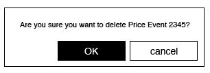
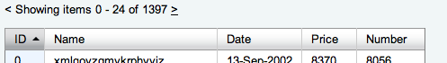
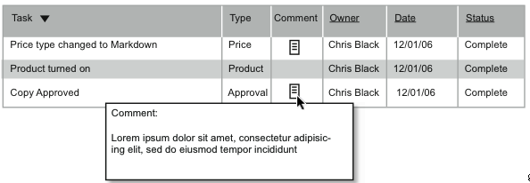

This document describes the functional specifications for the
Macys.com Stella project, a Product Information Management application.
The functional specifications contained within this document are based
upon input received from requirements gathering sessions with Macys.com
Users, Stakeholders, and Business Analysts. This document contains the
User Interface design specifications for all of the key user interaction
components in the application.
Application Purpose
Stella is a Product Information Management application that will be
used to stock, merchandise, and promote products available on the
Macys.com retail website. Its primary role is that of a Master Data Management
application: Stella takes source product data and allows multiple teams
of users to enrich and manipulate it for ongoing promotion and
presentation on the retail website.
The scope of this project is to replace the current FileMaker-based
Oz application with a robust, enterprise-level application that can
scale to match future growth for the next decade.
How many (numbers are very approximate, are for SF and NY locations only, and will grow)
Merchandise Managers
site store managers
SF
Internal
20
Buyers
determine which products to sell, manage pricing and determine promotions
NY
Internal
100
Planning
plan which products will need additional stock, less stock, etc
NY
Internal
15
MIO
place purchase orders, watch orders until they are received
NY
Internal
10
Creative Project Managers
create images for new ad's and banners, create ad IDs
NY
Internal
5
Imaging
Manipulate product images
NY
Internal
20
Account Executives
manage turn in process and projects in general
NY
Internal
15
Copywriters
write copy for products
NY
Internal
15
Photo Studio
Directs shooting of the products
NY
Internal
10
Content Engineers
programs website front end
SF
Internal
10
Production
manage all site enhancements, approve promotions, manage site QA by release
SF
Admin?
15
Marketing
set up overall marketing campaigns, manage 3rd party search terms
SF
Internal
25
Customer Service
place orders for customers, recieve and communicate customer complaints
other
Partner
? 20 ?
Business Analyst
Work with user groups to determine and define system enhancements
SF
Admin
10
Developers
Develop system
SF
Admin
20
Operations
maintain developed systems
SF
Admin
15
Bloomingdales
Manage store front, manage catalog product info
NY
Bloomies
Bloomies Wedding Channel
Manage store front data for WC
NY
Bloomies
Fulfillment
fulfill customer orders, view system to ensure product meets expectations
other
Partner
15
Vendors
Feed data about their products, approve product copy and images
other
Partner
10
Application Precedent
Stella's nearest relative in the Macys universe is the FileMaker OZ
application. Data being managed in Oz today will move out to four
separate applications:
Stella for Product Information Management
CMS for Content Management
DAM for Digital Asset Management.
PWM for Photography Workflow Management.
(Splitting the Oz application into separate apps encourages
mindfulness to think of all of them at once, however they must be
treated separately, and therefore CMS, DAM and PWM are beyond the scope
of this document.)
Several Enterprise-level applications were researched in the pursuit
of a suitable basis application for Stella. These are detailed in the Request for Proposal. As a result of this process the GXS PIM application was selected due to its feature-by-feature match to the macys.com requirements.
Application Name
The current application supporting this function is "Oz". When a
plan began forming to replace it, the placeholder name was "CMS" for
"Content Management System". Soon after it was discovered that this
application is really a "Product Information Management" (PIM) system,
and that three related systems were needed alongside to fully replace Oz
- an entirely separate "CMS", a "DAM" (Digital Asset Management
system), and a PWM (Photography Workflow Management system).
A naming effort was embarked on and the company first chose "STARS",
but then it was decided that the STARS name would be better for the full
suite of four applications.
And so "former Oz" became "CMS" which became "PIM" which became "STARS" and finally is now Stella.
Efforts have been made to be retroactively consistent in the
documentation, but should you see references to PIM in the docs, please
read as: Stella.
CMS, DAM and PWM have yet to be named.
Models
Users' Conceptual Models
The Mental Model
represents the business process flow from the highest possible vantage
point. The Mental Model was constructed from an exhaustive series of
user interviews to gain an holistic picture of the entire business
workflow process, and ancillary systems, that Stella needs to support
and be familiar with.
Workflows represent more granular and precise documentation of the components of the mental model.
To log into the system, a user will open the application in a web
browser via a URL, bookmark, shortcut icon, or any other standard means
of getting to a URI space via a browser.
Logging in will consist of entering a user ID (which may be stored
and automatically provided via cookie or auto-form-fill), and manually
entering a password. The password entry is not optional - password must
be provided manually by user to enter the system. The password will be
identical to the macys.com network login password that the user is
required to enter to initiate PC/LAN/VPN use on the macys.com network.
This combination of user ID and password is commonly known as the RACF
ID + password.
Three attempts with the login + password that fail will result in a
login failure, and will require a call to the MST help line to
reestablish identity.
A successful login will take a user to their Dashboard - their
personal home page in the Stella system that lets them review their
alerts and tasks that the system provides, as well as any other features
the dashboard provides (such as quick access to frequently used parts
of the system, saved sets and queries, etc.)
Global Navigation
Global navigation allows the user to access any of the default spaces
for the most common objects in the Stella system. This list includes:
The user's dashboard
Products (including Projects and UPCs)
Pricing (including Promotions)
Images and Samples
Advertisements
Category Management
Administrative users will see an Admin link
Access to Saved Sets and Saved Queries
Immediate access to search
Logout
Subnavigation
The largest areas of the system reflect Objects such as Products,
Pricing, Images, and Advertisements. Within each of these areas there
are different detail aspects to display. Subnavigation gets a user to
the exact detail screen they wish to see.
Example: A Product will have a Main details screen, a Copy
details screen, an Images detail screen, a Search attributes detail
screen, etc.
Navigating to each of these detail areas will be intuitive yet
distinct from the global navigation. Objects for the most part will not
have common detail areas (i.e. a Product will have a Copy details
screen, but an Image will not).
Search
Simple Search
A search field that appears on almost every screen in the system (if not all). (See the interaction controls description of simple search for more detail.) Allows the user to do quick and broad searches, Google-style across one object type or all object types.
This screen allows the user to construct very detailed searches with
multiple criteria related to one kind of object type (whatever object
type the user came from).
Saved Sets
A Saved Set is a search result that has been captured into a
static list of records that the user can return to at anytime, apply to
another object, perform an action on, and share with other users. The
contents of the set never change unless directly edited.
Saved Queries
A Saved Query is a search query that has been captured. At
any time it is viewed it may provide different record results depending
on the state of data in the database. For example, a Saved Query
for blue towels in division 16 may return different results depending on
when it is run. If a user wants to put all blue towels on sale for
march, without having to worry about incoming blue towels after the
fact, they will apply a Price Event to the blue towels saved query.
Corporate Classification Context
Corporate Classification hierarchy is described in the GMMBreakdownFINAL.fp7 database.
Division Identification
A user's profile in the system will carry information about the
area(s) of business that they are primarily concerned with: A user can
be mapped to 1, many, or ALL divisions.
This assignment will be used as a filter for what records the system automatically shows a browsing user.
Divisional Filtering of Records
Users are primarily interested in seeing the products that fall under
their area: A Buyer who is responsible for Bedding goods will by
default only wish to see those. Search features and saved sets/queries
will accomplish this for the majority of the time, but the system should
also have a default state of record presentation if they are just
browsing.
Every object's default screen - a list view - will have a "Filter By" control, which will default to the users area of interest when they log in. This serves three purposes:
It automatically limits the amount of data to the most relevant records for that user
It's visible, so it messages the user as to what the application is showing them
It's changeable, so that a user can change the Filter By to "no filters", which will show them all objects in that data table.
The "Filter By" control will allow focus by the following Corporate Classification attributes:
Broadest
More Refined
More Refined
More Refined
Most Granular
GMM
Division
Department
Class
Subclass
Default Detail Screen
Each major object type in the system has an access tab at the top of
the screen: users will always be able to click to immediately dive into
Products, Pricing, Images, etc.
When a user performs a browsing action, the system already knows the
primary area(s) of business that the user has been mapped to, and by
default filters the results to match their division(s).
To support the browsing method of interacting with the system, each
major object will have a default screen. This is a list view of
records.
Business Role Context
The Stella application should present itself as transparently as
possible to the end user. While users will want the ability to view
detail areas not common to their job function, they will be primarily
concerned with their specific areas of business: a copy writer will be
primarily focused on writing copy.
With this in mind, the Stella application will maintain a contextual
focus to the Business Role Area a user is working in. This is best
illustrated by example:
Copywriter Jo has performed a search and found all the Calvin
Klein blue towels for spring that she needs to amend copy on for the
upcoming blue towel sale. She now has a Record Focus State on
her set of records that she wishes to work on. She drills into one
specific record, onto the Copy Detail screen of that towel. She amends
the copy for that single Product Object. She then moves back into the
list view of her Record Focus State, and selects another towel from the list to work on. The
application will remember that she was on the Copy Detail screen, and
present that to her as the default detail screen, instead of any other
detail screen.
Not only does viewing a single object within a set persist the set,
but a user can page through the set, viewing the details of single
objects within the set one by one. The application will persist the
detail view that the user is concerned with. (e.g. the Copy team should
remain in Copy view.)
Moving From Record to Record Persists Window State
Users will have the ability to manipulate the state and structure of
the detail screens they view, by means of expanding and collapsing
distinct areas of the screen. This feature allows the user to tailor
the application presentation to their use and highlight what they wish
to focus on.
The expanded/collapsed state of a screen should be maintained as they
navigate across records. For example, if a user has chosen to collapse
the Corporate Classification details of one Product, then the next
Product they view should maintain the collapsed state of the Corporate
Classification details.
This feature maintains a user-centric experience: the screen persists the state the user has chosen.
The Interaction Elements portion of this document details specific UI elements that make this feature possible.
Record Focus
The Stella application can be seen as two things:
A Sifting tool, for finding relevant objects, and
A Manipulation tool, for changing data on the chosen objects.
Given this, there are three states of record focus that a user could be in at any given time:
1. Record Focus State 1 (Default): No records chosen = Show Records Relevant to my area of business (see Corporate Classification Context for more details)
When a user enters the system and browses (without performing a search,
selecting a task, or otherwise drilling down to a set or single record)
the focus will be (by default) to show records that the system knows to
be of interest to the user's area of business; the user can maniuplate
the focus through use of a filter.
2. Record Focus State 2: Set of Records
The user has performed an action that limits the set of records displayed. Possible ways of entering this state:
User has performed a search and gotten results
User has selected a saved set or saved query of records to view
User has chosen a task from their dashboard that involves multiple object records
etc.
3. Record Focus State 3: Single Record
The user has selected a single record to work on. Note that the larger
focus depends on if they chose this single record from the None/All state (1) or the Set State (2). If the user is in a Set State then working with a Single Record in the Set still persists the Set.
UI feedback, to inform the user of the Record Focus, will exist in
the form of a record count indicator. Example: << < 10 of 230
> >>
Record Locking
Just as a Product has many different aspects (copy, image, sample,
etc), the Stella application is designed with the idea of different
teams of people working on different focus areas of the Product (or
other object record, such as Image). The Copy team will write copy, the
Images team will provide images.
Stella will be smart about letting these teams work concomitantly.
The efforts of the Copy team should not block the efforts of the Images
team, and so on. Intelligent separation of focal areas of the object
record, by team, will prevent work inefficiencies due to record-locking
collisions.
When a user chooses to edit a record, they should only be locking out
the portion of that record that applies to their team. A Copy editor
should only lock out the copy portion of the record. Stella will
provide visual feedback as to what part of a record is currently in edit
state versus view state. Stella will also visually message a user that
they are the current 'owner' of an area of a record, and that no-one
else may edit that area until they have committed or canceled.
For further clarification, see section 2.3 of the GXS FRS document; specifically the section at the end of section 2.3 which speaks to Orchestration.
Business Process State
The approvals area will indicate to the user what teams have signed off on their work. This will show:
Is it approved, and by who
Does it need revisions
is it approved, is it even submitted for approval, is it rejected and needs revisions
Archive View
Old objects are not needed for general searching and viewing. The
act of archiving flags an object as removable from the production
system, to be stored in a historical archive.
Automatic Child Object Flagging
Flagging an object as archive will cause all of the children objects which have no other parent objects
to be flagged as archive as well. The list of archivable children
object types should be limited to those children which would have no
reason for being in the system if their parent is not. For example, if a
product is marked as archive, then copy attributes such as long
description, which belong to ONLY that product, should be marked as
archive.
Archive Schedule
We imagine that things will be flagged as archive, and every so often
a cron job will perform the task of crawling the system for
archive-flagged objects and move them into the historical archive (and
therefore removing them from the production system).
The Archive World
The historical archive should be browseable and searchable just as
production Stella is. In fact, it should basically be another instance
of Stella, except with very clear visual messaging that this is the
"archive world".
Object Retrieval
Just as objects and their children which have been flagged for
archive get moved into the Archive World, objects and their children
should be retrievable from the Archive World to be moved back into
Production.
The Wireframes(see the attachments tab) represent the Information Architecture of the application.
General Design Standards and Application Behavior
Design Introduction
Stella is the instrument for a daily and constant fine tuning of the
merchandise for sale on the retail website. Macys.com customers expect
an elegant and refined retail experience; Stella should be the inward
facing reflection of this spirit.
To this end, the application should be clean, elegant, and enjoyable
to use. Above all it should be as transparent as possible to the user:
good design eliminates obstacles and allows the user to focus on what it
is they need to accomplish.
Three key principles to bear in mind are:
Good Design is Transparent: A well designed interface will allow the users to accomplish their tasks more efficiently.
Usability: Following key ideas in usability philosophy reinforces the Good Design principle and is proven to return on investment.
User-centric: The company asks their users to spend full
work days immersed in this application. It should be a clean, smart and
even enjoyable place to spend time. Where possible the application
should "know the user" and be a clear extension of their job function.
With these principles in mind, this section describes granular
concepts about the interface that will contribute to the most successful
user experience.
An Aggregator allows users to select multiple items from a list, to form their own subset list.
Single or multiple items may be selected from the list on the left.
Clicking the Add >> button will move the selected items from the list on the left to the list on the right, removing them from the left list.
Likewise, single or multiple items may be selected from the list on the right, and clicking the << Remove button will move the selected items from the list on the right to the list on the left, removing them from the right list.
1. Initial (untouched) state
2. Two items on the left selected
3. User has clicked the Add >> button, moving 2 selected items from the left list to the right list
Clickable IDs
Where related records are displayed, the id of the related record
will always be displayed, and will always be clickable. Clicking the ID
will take you to a detail view of the object clicked. The specific
detail view presented upon clicking depends on the user's previous use
of the application and the remembered contextual state:
If the user has been to a detail screen for that object type in the
present session, clicking the ID of, say, a related product record,
will take the user to the last detail screen type the user viewed within
that object area. Example: a user is looking at an image detail
screen. They got there by clicking an image id link from the Product
detail screen called Images. Now in the image, they go to the
Associated Products detail screen. They click on the ID of an
associated Product. The system knows to take them not only to the
product but to the Product's Images detail screen.
If the user has not been on a detail screen for the clicked ID's
object type within this session, then the click will take them to the
default detail screen for that object type.
Contextual Help
Where possible, contextual help will appear in the form of an
icon/button that spawns a new window to the appropriate section of the
user documentation/help wiki.
Dashboard
Alerts & Tasks
Alerts in the Dashboard will be clickable, taking the user to exact
object record (or set of records) where their task is to be reviewed and
performed.
Single Tasks/Alerts reference a single object
Summary Tasks/Alerts provide a single action item in the Dashboard,
but reference a collection of (same type) objects. Clicking the
Task/Alert brings the user to the set of objects and the correct detail
screen (or multi-change screen) to review/perform the action.
Preferences
User will specify, by Alert type, whether to receive an Alert/Task by the following delivery choices:
Single Alert/Task
Digest of same Alert/Task types, on a schedule
Choice of Dashboard or email delivery (or both). Dashboard is default.
Dates & Times
Calendar Widgets
Each user editable field typed as a date is to be accompanied by a
small calendar icon to the right. Clicking this control brings up a
calendar widget that the user can use to choose a date. Note: use of this widget is not required to enter a date into the field; it is an optional control.
The widget will highlight the current (today) date, and provide
arrows to scroll backwards and forwards through months (and years?).
1. Initial (untouched) state
2. User has clicked the calendar iconNote the current date is highlighted
*3. *User clicks on a date in the widget, and...
4. ...the date chosen is populated into the field, and the widget dismisses itself.
Times
Where the design calls for the user to enter a time, there will be a
GUI widget that allows for control of the hours, minutes, seconds, and
time suffix (a.m. or p.m.). The user is not required to use the up/down
controls; they can type in a number for each of the H, M S positions,
and an "a"/"am" or "p"/"pm" for the meridian position. The up-down
control is an aid to the position they have selected.
A user can type: 040010am and the widget would display 04 : 00 : 10 : am.
A user can type 04, then use the arrows to add or subtract units to the position
a user can click on any of the 4 positions and type or use the up/down arrows to find the correct value.
Time entry VS Sequencing
Regarding Pricing, the website will look among same-day sale events
and choose the one with the greatest number of seconds. Example: sale 1
starts at 00:00:01 and sale 2 starts at 00:00:02. The site will show
the :02 sale event as the correct price.
In Oz users manage sale priority this way, but this is not the best
useability practice. For pricing instead we will use Sequencing, just
as Categories and Copy bullet points use them: the user can enter a 1,
2, 3, etc to assign which sale event should have priority.
The system will take this sequence/priority assignment number and
adjust the seconds in the background to tell the site which sale event
has priority.
Multidates
Where the requirements allow for multiple dates or date ranges to be
entered, the UI will present a way to spawn another date (and possibly,
time) entry field.
1. Initial state
2. User has filled out first, date & time and clicked the action to spawn another
Dropdowns & Auto-Complete (Comboboxes)
The Auto-Complete control provides the front-end logic for text-entry
suggestion and completion functionality. Auto-complete involves the
program predicting a word or phrase that the user wants to type in
without the user actually typing it in completely.
This approach can generally be used effectively in those cases where
it is relatively easy to predict the new words being input based on
those already input because of a limited number of possible words (small
lexicon).
1. Initial (untouched) state
2. User begins typing; drop-down displays results that match
3. As the user enters characters, the results list filters down to match
4. Using the arrows keys will change the highlighted result
5. A result is chosen by 1. using the mouse to click on a result; 2. pressing the tab (selects highlighted result)
Expanding/Collapsing Window Functionality
Sections of screens will have to ability to expand and collapse, to provide a more useable user experience.
The default/unused state of the system will be to have all areas expanded
When a user leaves a screen, the system should remember the state
of the screen (which sections are collapsed vs. expanded), and restore
that state when the user returns to that screen, UNLESS:
If they are coming to the screen by way of a reference to something in a collapsed area, that area should appear expanded.
Collapsed areas that contain images should have an "intermediate"
collapsed state that still shows the image. _(This is a request from the
Copy Team.)
1. Collapsed
2. Expanded
Filters
A filter control allows the user to refine the selection of records they are viewing. See Corporate Classification Context for more detail.
Hover Dropdowns for Navigation
Provides a shortcut to lower levels of navigation from the top-level
nav. One click on the top nav tab will go to the default areas for that
tab; hovering over the tab (or clicking a down arrow on the side)
exposes a hovering menu that allows a user to drill down to a specific
detail screen.
Advertisement Images are often used as ImageMaps. This is a utility
to assist the users in creating the slices and entering the link
information for the region selected.
List of IDs to Set / Set to List of IDs
Users need to be able to extract a carriage-separated list of the IDs
the are currently browsing, and conversely to be able to paste in a
list of IDs and have the system create a saved set of records from the
matching IDs in the list.
The interaction object will be a textarea. It should be able to
handle 500 record IDs, or a 3000 character limit. The lines are
separated by carriage returns.
1. Extracting a List of IDs - the user has activated a control bringing them to this widget.
2. Create a Saved Set from a Pasted In list of IDs, 1 - initial state
3. Create a Saved Set from a Pasted In list of IDs, 2 - user has pasted in list
List Views
Quantity of results shown
List views should always display a count of the items being shown in the list.
Endless (auto-load) Paging
Provided as an optional technique to replace multiple pages of
results. "Using Ajax we can dynamically fetch more results and append
them to the bottom of the page, as the user approaches the end of the
content they have already read. This pattern removes the need for
pagination, feeding your customer as much data as they care to read in a
subtle, non-intrusive way."
Information messaging should consist of two primary components; an
overview message, and if appropriate, a bulleted listing providing
feedback specific to each operation.
The following fields were reformatted:
8 has been reformatted to $8.00.
089 has been reformatted to $89.00.
The message itself should be contained within a bounding box
(#ffffcc), which serves to visually highlight the messaging to the end
user.
Error Messaging
Error messages should follow the same base rules as those defined for
Informational Messaging using a presentation of #ffccff. In addition,
each of the offending fields should be visually highlighted and include
the inline display of a short description of the validation failure to
the end user.
ID Validation
There are many places in the application where a user is prompted to
enter the ID of another object to forge a relationship. The UI should
provide visual confirmation of correct ID entry, before they commit the transaction, to reassure them that they are making the correct association (and not an invalid one). The more reassurance the GUI can provide that they have entered the correct ID, the better.
1. Initial state - user prompted to enter an object ID
2. User has entered an invalid ID
3. User has entered a valid ID, the object's name appears
Record State
Messaging on the screen should tell the user at a glance what the current state of the record is:
If the screen, record or record-area is in view-only mode
If the user is currently editing the record or record area
If the record or record area is currently uneditable because another user has it in a workflow
In addition to the state of the record, the user should be messaged about their most recent action:
"The change was successful"
"The change was canceled"
Required Fields and Completion Status
Required fields should be called out on the layout with a visual indicator. A * red asterisk is a common way of doing this.
(anchor:notes}
Notes
When a note is entered, the username, date and time should be pre-pended to the note.
Overlays
An overlay exposes an overlying 'sheet' of information that a user
can quickly scan for further detail, then dismiss to continue their
work.
1. Initial state - standard Product detail screen
2. User has clicked on the image thumbnail, exposing an overlay full of information about the image
Pop-up / Modal dialog boxes
Note: The default action must always be the first button on the left
... It should always be OK / Cancel as opposed to Cancel / Ok. with the exception of a wizard... or any type of multi-step process.
1. Confirmation Dialog. Non-moveable. Ok and Cancel buttons.

2. Standard Dialog.
Preview
Preview will spawn a new browser window that lets the user examine
their data in a view that approximates how it will look on the retail
website.
If the preview function was triggered from a set of records the user
wishes to preview, they should be able to flip through multiple preview
records.
Progress and Activity Animations
When the system is performing an action that will take more than a
second or two in response time, the system will display some sort of
"activity" animation to indicate to the user that a process is taking
place. There are two types of these animations:
1. Activity ("I'm thinking"):
An animation such as a spinning wheel that has no start or stop points;
this indicates that a process is taking place but the system can't
accurately predict when it will end. Not to be used for long
processes but rather for short durations - any longer than 30 seconds
and the user will start to believe the system may be "hung".
2. Progress ("Here's how much I've done, and how much I have to go"):
This animation has a clear start and stop, such as a progress bar that
fills up from left to right, the right side indicating completion. An
animation of this type is frequently accompanied with a % complete
number, sometimes in the animation itself. To be used when the system
can calculate approximately how long or how many units of processing an
action will take. Good candidate for bulk change requests that need to process across large sets of records.
Note: actual animations to be decided in visual design.
Recently Viewed Items
The system will maintain a running history of the last ___ recently
viewed objects in the system, and make them accessible to return to.
Search Interaction
Simple Search
Simple search will be available at the top of every screen, consisting of 5 elements:
A drop down for the user to specify what object type to search on;
this is defaulted to the object type of the area they are in, and has an
All option;
A text entry field;
An action button that executes the search;
A link to go to the advanced search screen
A link to access saved sets and queries
Advanced Search
The advanced search interface is represented in the wireframes document (screen ids begin with WF-ADVSRCH).
Adding Search Criteria
Smart Interaction Controls
When adding a search criteria to an advanced search, the interaction
control for entering the search criteria value will present itself based
on the correct predetermined control type for that datapoint. For
example, if a user adds a publish date field to the search criteria, the
interaction control for entering the date will be a date field with popup calendar.
Search Results
Search results for a single object type (say, Products), will have a
control that allows the user to view different columns of results.
The ID and Name (or Description) columns in the results will be
visible across every "column grouping" that a user can view in their
results.
The "column groupings" will mirror the groupings by screen as seen in the left hand navigation on every detail screen.
Example: By default, Product results will show a set of columns
that reflect data seen on the Overview screen. Other column groupings
they could view by are Copy, Approvals, History, Master Pages, Shipping
Values, etc.
Quantity of results
Searches will show 50 results per screen before the user needs to 'page' to the next set of results.
Sequencing/Reordering Items in a List
Where drag and drop is possible, it is helpful; however, the default
method should always be manual sequence number entry, followed by a
commit action which visually reorders the list according to the entered
sequence numbers.
Manual Number Entry
1. Initial state
2. User manually changes sequence numbers
3. User performs commit action; system refreshes list in correct
order, rewriting the sequence numbers and changing the row sort into the
new order.
Preserving the user's entry
The sequence number should be preserved as entered by the
user; if they enter 1, 200, 3, then upon sorting, the list will return
as: 1, 3, 200 (and not 1, 2, 3). This includes decimal entries AND
negative numbers.
Drag and Drop Sequencing
User can reorder items in a list via drag and drop.
1. Initial state
2. User has selected item 3 and is dragging to the 2 position - note that 2 slides down to make room
1. User releases item 3 in the 2 position
Tabbed Panels/Sheets
This is an area of the screen that can be tabbed through to reveal more (and lower priority information).
1. Initial state
2. Clicking Tab 2 does not refresh the screen; it only changes the information displayed in the tab sheet area
Tabular Data Display (tables)
Expandable rows
A table row should have the option to be expandable & collapsable
to display information that needs to be accessible but is not vital in
the first layer of the presentation.
Liquid table length
When a table is showing all related rows of information but the
number of rows does not exceed the maximum designated for display, the
table should "shrink" to end at the last row. No empty rows should be visible.
Row quantity counter
Tables should always display a counter of the rows being shown in the table.

Sortable columns
Clicking the header of a table column will cause the table to sort
itself by that column, and the header will display some visual
indication that it is the current sort column.
Clicking the column header more than once will alternate between descending and ascending sorts.
1. Clicking the TKT column header sorts the table by that column in descending order
2. Clicking the TKT column again sorts the table by that column in ascending order
Table pagination
When a table has more related rows to display than can fit in the
maximum number of rows as dictated by the design, there should be a
visual indication/pagination utility to move forward/backward through
the rows
Tooltips / Mouseovers
Tooltips display contextually relevant information in a small
hovering panel just underneath the mouse cursor. They appear after a
very short delay when a user has positioned the cursor over something
that can potentially display a Tooltip. The purpose of a Tooltip is to
provide further business information or "help" that will be useful to
the user in a short glance but is not called for or possible in the
standard page layout.
1. Initial (untouched) state
2. User has rested cursor over an object for a brief delay

Thumbnails in List Views
Whenever a list view shows, if a thubmnail image column is relevant,
it will display by default. There will be an option to turn off
thumbnail view (and thereby display smaller and MORE rows).
where a user enters a value into a combobox that isn't in the table.
In some cases (including editing UPC size), the user should be asked to
confirm that they want to add a new entry to the list, and that action
should start a workflow that gets their manager to approve this.
Unmatching entry Add or Reject
When a user enters a value into the system, and the systems performs a
validation, and the string they enter is new to the system, the system
will do one of two things:
List that can be added to:
In some cases (including editing UPC size), the user should be asked
to confirm that their unrecognized entry should be added to the system.
That action will start a workflow that gets their manager or an admin to
approve this.
Unchangeable list:
The user should be messaged that this entry is not valid and cannot be saved.
Users familiar with the Oz system are accustomed to not having to
click a submit or commit button to make changes. The Stella system will
intentionally change that model to move to a more standard way of
interacting with a database via a browser-based application.
A user of the Stella system will be required to manually inform the
application that they wish to write their changes to the database: this
will be done via a Submit/Commit control.
For usability purposes, designers of this system should keep in mind
that a user may not always remember to use this button. Therefore:
When a screen is in edit mode, and a user has made changes, and has
not Submitted the changes, and attempts to navigate away from the area
they are editing, the system should ask if the changes should be saved.
External Device Support
Barcode Scanners
The Sample Room will be the primary customer for this feature. Users
in the Sample Room will have access to barcode scanning technology.
The Stella system should be able to recognize this form of input and
capture a barcode successfully.
Printers
Standard company printers should work with the system. Users should
be able to print out screens as they would with any other browser based
website or application.
Localization Support for Messaging
Localization is not in scope for Phase 1 of the project, but should
kept in mind as Macys.com moves forward with future initiatives.
If the system is currently offline or otherwise unavailable, the
goal is that the user should not see a generic error but instead an
informative admin message to the users and a rough ETA of when it will
be back up.
If an error occurs such that the user cannot retrieve data or
cannot write data at a particular instant, the user should be messaged without losing their screen/work to attempt again and/or contact the help desk.
Timeout
After 30 minutes of non-use, the application will time out. Unsaved changes will be lost.
Internet Explorer is the target browser for computers running
windows. Firefox is the target browser for other operating systems. The
application should detect if access is attempted with an unsupported
browser, and notify the user that there is a risk of potential issues.
However, we should never lock someone out of the system for using an
unsupported browser.
Auto-Fill
Auto-fill (or automatic form completion) will be the domain of the
browser. If the browser is Firefox, a form-filler plug-in such as Auto-fill plug in or FireForm is recommended.
Find
Users should be able to search within words on the page using "find."
Keyboard Support
Advanced users work more quickly with robust access to keyboard
shortcuts. The following shortcuts are recommended for the Stella
application:
Command
PC Keystroke
Mac Keystroke
Native Browser Support?
save/submit
maybe
cancel
esc
esc
maybe
find (on screen)
control-f
command-f
yes
go to next field
tab
tab
yes
undo (typing only)
control-z
command-z
yes
In addition, access to the standard suite of all other native browser key commands is recommended.
The Ctrl / Command key is reserved for OS based actions. On the
Windows side, the Alt key is typically used for in browser actions.
Should determine the OS X equivalent.
Help / List of Keyboard Shortcuts
The appliation should have an easily accessible help page documenting the available keyboard short cuts.
Return key acts as submit button
Carriage returns will be necessary in the course of
normal text entry (notes, etc). Is it reasonable to expect users to
have to mouse-click the submit button, or perhaps use the tab key to
focus the submit button, whereupon they can use the return key. TBD.
Tabbing action
Tabbing from field to field on a data entry/edit screen should follow
the logical order of information on the page. Tab order is defined in
the page markup.
Multiple Browser Windows
For the most part, Stella should be viewed as a single window
application. There are a few cases where more than one window being
open can be advantageous, but should this occur, the model is that there
is one central application window, and that any other open windows are
satellite windows to the central window. These include:
Online Help: clicking a Help button can spawn a new window
that shows the user the requested documentation. This has the advantage
of not navigating the user away from what they were working on. The
spawned window should not completely obscure the central work window, to
show the user their work is still 'right there'. Closing this window
does not affect the original window in any way.
Preview: activating a Preview option should spawn a new
window containing the preview view of the record(s) the user requested
to preview. This has the advantage of not navigating the user away from
what they were working on. The spawned window should not completely
obscure the central work window, to show the user their work is still
'right there'. Closing this window does not affect the original window
in any way.
Review Window(s): A user may be working in one window, but
open other windows to review data, as reference materials for their
original work. Example: a user is editing a product's swatches in one
window, and opens a second window to view that product's upc list while
they work in the firrst window. At all times, a workflow or workflow
steps that can begin and end within a single user's perview and a single
session, should remain inside the same window (excepting workflow steps
such as spawn preview, etc).
The Back and Forward buttons
Back and forward buttons should work, allowing the end user to navigate through the page history.
The Refresh button
The refresh button should work, refreshing the current state as opposed to re-initializing the application.
Typing Undo
The browser undo command should revert typing changes.
URLs / Bookmarks / Deeplinks
Users should be able to create bookmarks.
Deep links should be provided that users can send to colleagues by e-mail and chat.